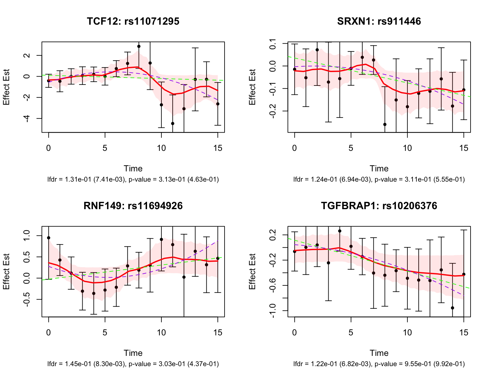
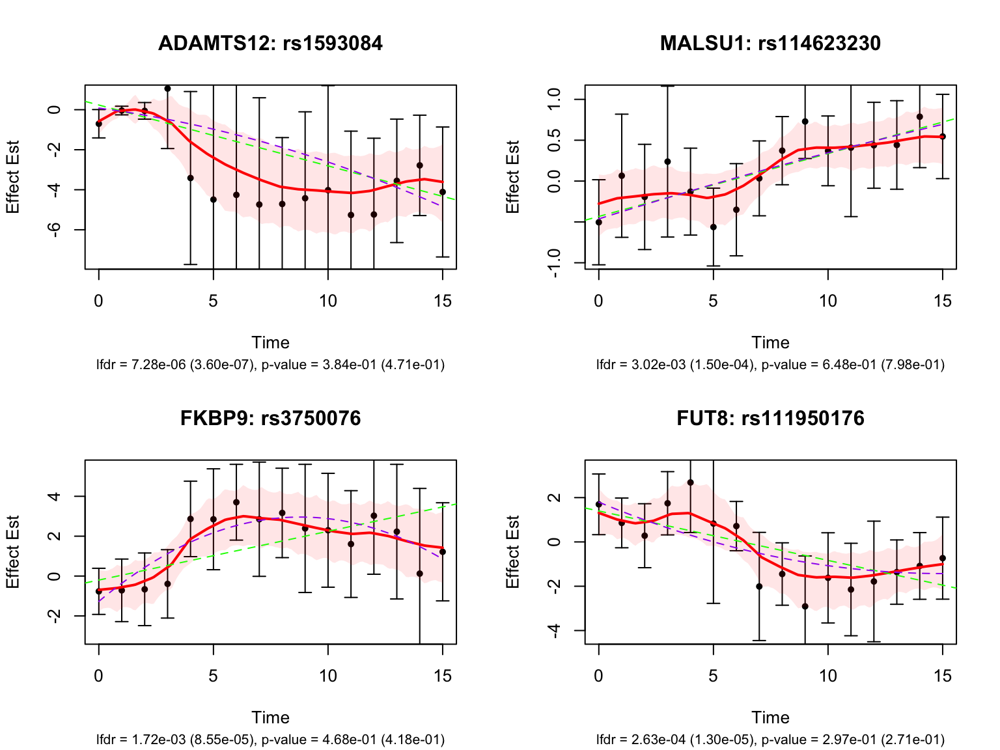
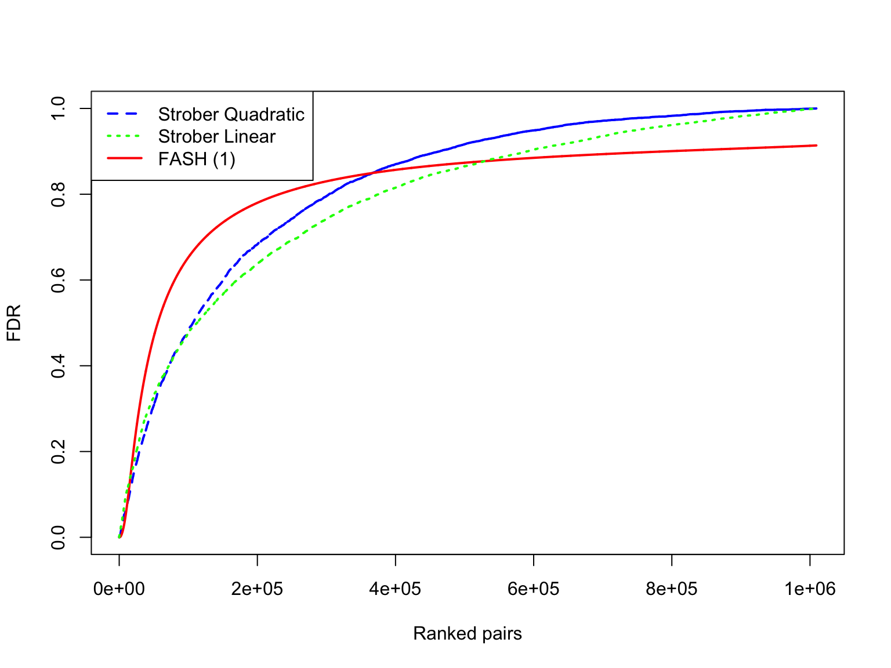
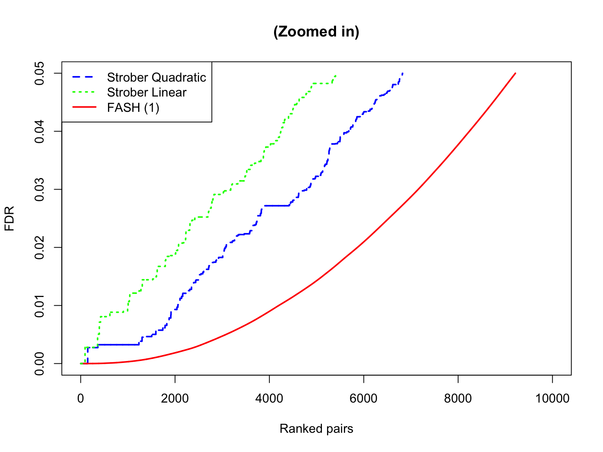
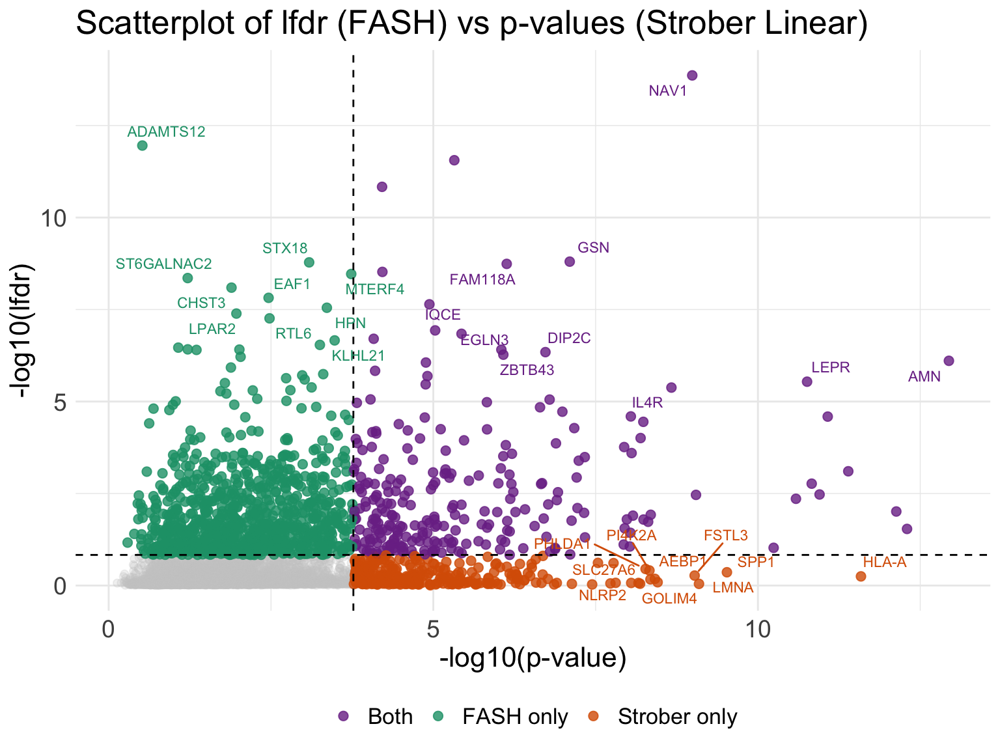
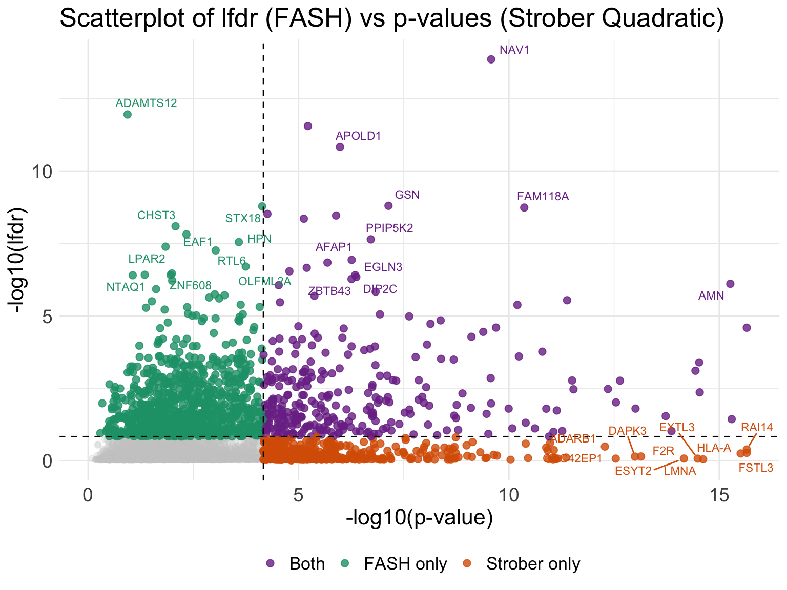

Dynamic eQTL analysis on iPSC
Ziang Zhang
2025-02-21
Last updated: 2026-08-24
Checks: 6 1
Knit directory: coderepo-local/
This reproducible R Markdown analysis was created with workflowr (version 1.7.2). The Checks tab describes the reproducibility checks that were applied when the results were created. The Past versions tab lists the development history.
The R Markdown file has unstaged changes. To know which version of
the R Markdown file created these results, you’ll want to first commit
it to the Git repo. If you’re still working on the analysis, you can
ignore this warning. When you’re finished, you can run
wflow_publish to commit the R Markdown file and build the
HTML.
Great job! The global environment was empty. Objects defined in the global environment can affect the analysis in your R Markdown file in unknown ways. For reproduciblity it’s best to always run the code in an empty environment.
The command set.seed(20251109) was run prior to running
the code in the R Markdown file. Setting a seed ensures that any results
that rely on randomness, e.g. subsampling or permutations, are
reproducible.
Great job! Recording the operating system, R version, and package versions is critical for reproducibility.
Nice! There were no cached chunks for this analysis, so you can be confident that you successfully produced the results during this run.
Great job! Using relative paths to the files within your workflowr project makes it easier to run your code on other machines.
Great! You are using Git for version control. Tracking code development and connecting the code version to the results is critical for reproducibility.
The results in this page were generated with repository version c87957a. See the Past versions tab to see a history of the changes made to the R Markdown and HTML files.
Note that you need to be careful to ensure that all relevant files for
the analysis have been committed to Git prior to generating the results
(you can use wflow_publish or
wflow_git_commit). workflowr only checks the R Markdown
file, but you know if there are other scripts or data files that it
depends on. Below is the status of the Git repository when the results
were generated:
Ignored files:
Ignored: .DS_Store
Ignored: .Rhistory
Ignored: .Rproj.user/
Ignored: Rplots.pdf
Ignored: analysis/.DS_Store
Ignored: analysis/.Rhistory
Ignored: code/.DS_Store
Ignored: code/.Rhistory
Ignored: code/revision_simulations/.DS_Store
Ignored: data/appendixB/
Ignored: data/dynamic_eQTL_real/
Ignored: data/revision_simulations/
Ignored: data/toy_example/
Ignored: output/dynamic_eQTL_real/
Ignored: output/pdf/
Ignored: output/playwright/
Ignored: output/revision_simulations/
Ignored: scripts/
Untracked files:
Untracked: analysis/dynamic_eQTL_real_cl.rmd
Untracked: analysis/nonlinear_dynamic_eQTL_real_cl.Rmd
Untracked: analysis/revision_enhancer_enrichment_cl.rmd
Untracked: analysis/revision_internal_correlated_permutation_discoveries.rmd
Untracked: analysis/revision_internal_evaluation_grid_mc_sensitivity.rmd
Untracked: analysis/revision_internal_evaluation_grid_mc_sensitivity_middle_4_11.rmd
Untracked: analysis/revision_internal_fash_cl_manuscript_impact.rmd
Untracked: analysis/revision_internal_fash_discovery_variant_count.rmd
Untracked: analysis/revision_internal_fash_linear_real_data_ablation.rmd
Untracked: analysis/revision_internal_fashr_correlated_observation_model.rmd
Untracked: analysis/revision_internal_matched_fash_linear_real_data.rmd
Untracked: analysis/revision_internal_matched_fash_linear_real_data_cl.rmd
Untracked: analysis/revision_internal_r1_normality_assumption.rmd
Untracked: analysis/revision_internal_small_m_clean_working_null_sensitivity.rmd
Untracked: analysis/revision_internal_small_m_matched_null_eb_sensitivity.rmd
Untracked: analysis/revision_internal_twenty_variant_per_gene_refit.rmd
Untracked: apps/
Untracked: code/02_dyn_lfsr.R
Untracked: code/02_dyn_lfsr.sbatch
Untracked: code/revision_simulations/appendix_b/
Untracked: code/revision_simulations/internal/cl_pc_real_data_pages/
Untracked: code/revision_simulations/internal/correlated_permutation_discoveries/
Untracked: code/revision_simulations/internal/covariance_estimation/run_design_propagated_null_correlation.R
Untracked: code/revision_simulations/internal/covariance_estimation/run_multigene_null_beta_covariance_exploration.R
Untracked: code/revision_simulations/internal/early_window_sensitivity/
Untracked: code/revision_simulations/internal/evaluation_grid_sensitivity/
Untracked: code/revision_simulations/internal/fash_cl_manuscript_impact/
Untracked: code/revision_simulations/internal/fash_discovery_variant_count/
Untracked: code/revision_simulations/internal/fash_knockoff/
Untracked: code/revision_simulations/internal/fash_linear_real_data_ablation/
Untracked: code/revision_simulations/internal/fash_strober_enhancer_comparison_cl/
Untracked: code/revision_simulations/internal/matched_fash_linear_real_data/
Untracked: code/revision_simulations/internal/matched_fash_linear_real_data_cl/
Untracked: code/revision_simulations/internal/r0_linear_iwp_power_mechanism/
Untracked: code/revision_simulations/internal/r0_linear_summary_statistic/
Untracked: code/revision_simulations/internal/r1_known_truth_genotype_permutation/
Untracked: code/revision_simulations/internal/r1_linear_truth_composition/
Untracked: code/revision_simulations/internal/r1_normality_assumption/
Untracked: code/revision_simulations/internal/r3_middle_calibration/
Untracked: code/revision_simulations/internal/residual_correlation_fash/
Untracked: code/revision_simulations/internal/selected_signal_genotype_permutation/
Untracked: code/revision_simulations/r1_r2_fashr0143/
Untracked: code/revision_simulations/r3_r4_fashr0143/
Untracked: code/revision_simulations/r4_correlated_errors/real_genotype_r1_helpers.R
Untracked: code/revision_simulations/r5_one_variant_per_gene/
Untracked: code/revision_simulations/shared/build_real_genotype_one_per_gene_cache.R
Untracked: code/revision_simulations/shared/real_genotype_one_per_gene.R
Untracked: code/revision_simulations/shared/test_linear_mixture_fash.R
Untracked: code/revision_simulations/shared/test_real_genotype_one_per_gene.R
Untracked: code/revision_simulations/shared/test_relative_location_clearance.R
Untracked: code/revision_simulations/shared/test_temporal_category_mixture.R
Untracked: code/revision_simulations/shared/validate_r1_r2_linear_mixture_pairing.R
Untracked: code/revision_simulations/shared/validate_r1_r2_real_genotype_pairing.R
Untracked: figure/
Unstaged changes:
Modified: analysis/appendixB.rmd
Modified: analysis/dynamic_eQTL_real.rmd
Modified: analysis/dynamic_eQTL_real_full.rmd
Modified: analysis/index.Rmd
Modified: analysis/nonlinear_dynamic_eQTL_real.Rmd
Modified: analysis/nonlinear_dynamic_eQTL_real_full.rmd
Modified: analysis/revision_balanced_variant_thinning.rmd
Modified: analysis/revision_combined_spiky_genotype_simulation.rmd
Modified: analysis/revision_correlated_error_simulation.rmd
Modified: analysis/revision_enhancer_enrichment.rmd
Modified: analysis/revision_functional_testing_simulation.rmd
Modified: analysis/revision_genotype_level_simulation.rmd
Modified: code/revision_simulations/README.md
Modified: code/revision_simulations/internal/covariance_estimation/run_global_pca_factor_visualization.R
Modified: code/revision_simulations/internal/fash_strober_enhancer_comparison/enrichment_api.R
Modified: code/revision_simulations/internal/fash_strober_enhancer_comparison/reporting.R
Modified: code/revision_simulations/internal/fash_strober_enhancer_comparison/run_fash_strober_enhancer_comparison.R
Modified: code/revision_simulations/r1_random_bspline/reporting.R
Modified: code/revision_simulations/r1_random_bspline/run_random_bspline_mc_replication.R
Modified: code/revision_simulations/r2_spiky_transient/reporting.R
Modified: code/revision_simulations/r2_spiky_transient/run_combined_spiky_genotype_simulation.R
Modified: code/revision_simulations/r2_spiky_transient/run_spiky_transient_mc_replication.R
Modified: code/revision_simulations/r3_functional_testing/reporting.R
Modified: code/revision_simulations/r3_functional_testing/run_matched_functional_testing_mc_replication.R
Modified: code/revision_simulations/r4_correlated_errors/estimate_real_data_error_correlations.R
Modified: code/revision_simulations/r4_correlated_errors/reporting.R
Modified: code/revision_simulations/r4_correlated_errors/run_full_empirical_correlation_mc.R
Modified: code/revision_simulations/r4_correlated_errors/run_lag1_correlation_sweep.R
Modified: code/revision_simulations/shared/simulation_functions.R
Note that any generated files, e.g. HTML, png, CSS, etc., are not included in this status report because it is ok for generated content to have uncommitted changes.
These are the previous versions of the repository in which changes were
made to the R Markdown (analysis/dynamic_eQTL_real.rmd) and
HTML (docs/dynamic_eQTL_real.html) files. If you’ve
configured a remote Git repository (see ?wflow_git_remote),
click on the hyperlinks in the table below to view the files as they
were in that past version.
| File | Version | Author | Date | Message |
|---|---|---|---|---|
| Rmd | c87957a | Ziang Zhang | 2026-08-10 | Add revision analyses: R1-R6 reviewer-facing pages and internal studies |
| html | 9fbd863 | Ziang Zhang | 2026-01-21 | Build site. |
| Rmd | 0b26571 | Ziang Zhang | 2026-01-21 | workflowr::wflow_publish("analysis/dynamic_eQTL_real.rmd") |
| html | ebf8a85 | Ziang Zhang | 2026-01-21 | Build site. |
| Rmd | 709663f | Ziang Zhang | 2026-01-21 | workflowr::wflow_publish("analysis/dynamic_eQTL_real.rmd") |
| Rmd | 4c1c6ec | Ziang Zhang | 2026-01-20 | rerun using 5 pcs |
| html | 4c1c6ec | Ziang Zhang | 2026-01-20 | rerun using 5 pcs |
| html | 885ee18 | Ziang Zhang | 2026-01-19 | update code for non-linear dynamic |
| Rmd | 79ff501 | Ziang Zhang | 2026-01-19 | code refactor |
| html | 79ff501 | Ziang Zhang | 2026-01-19 | code refactor |
| html | 0fc1046 | Ziang Zhang | 2025-12-18 | Build site. |
| Rmd | c0e05d7 | Ziang Zhang | 2025-12-18 | workflowr::wflow_publish("analysis/dynamic_eQTL_real.rmd") |
| html | c75cd5f | Ziang Zhang | 2025-12-18 | Build site. |
| Rmd | 27c4197 | Ziang Zhang | 2025-12-18 | workflowr::wflow_publish("analysis/dynamic_eQTL_real.rmd") |
| html | c3e274e | Ziang Zhang | 2025-12-17 | Build site. |
| Rmd | c636ff9 | Ziang Zhang | 2025-12-17 | workflowr::wflow_publish("analysis/dynamic_eQTL_real.rmd") |
| html | 2010ecb | Ziang Zhang | 2025-12-16 | Build site. |
| Rmd | bd29c15 | Ziang Zhang | 2025-12-16 | workflowr::wflow_publish("analysis/dynamic_eQTL_real.rmd") |
| html | 5be62b6 | Ziang Zhang | 2025-12-12 | Build site. |
| Rmd | bb505cf | Ziang Zhang | 2025-12-12 | workflowr::wflow_publish("analysis/dynamic_eQTL_real.rmd") |
| html | 83145cc | Ziang Zhang | 2025-12-12 | Build site. |
| Rmd | aae2964 | Ziang Zhang | 2025-12-12 | workflowr::wflow_publish("analysis/dynamic_eQTL_real.rmd") |
| html | 36a81a3 | Ziang Zhang | 2025-11-09 | Build site. |
| html | d73f3f1 | Ziang Zhang | 2025-11-09 | Build site. |
| Rmd | 9f55956 | Ziang Zhang | 2025-11-09 | workflowr::wflow_publish("analysis/dynamic_eQTL_real.rmd") |
knitr::opts_chunk$set(fig.width = 8, fig.height = 6, message = FALSE, warning = FALSE)
library(fashr)
library(dplyr)
library(tidyr)
library(stringr)
library(purrr)
# plotting / viz
library(ggplot2)
library(ggrepel)
# paths
result_dir <- file.path(getwd(), "output", "dynamic_eQTL_real")
data_dir <- file.path(getwd(), "data", "dynamic_eQTL_real")
code_dir <- file.path(getwd(), "code", "dynamic_eQTL_real")
# grids
log_prec <- seq(0, 10, by = 0.2)
fine_grid <- sort(c(0, exp(-0.5 * log_prec)))
# ----------------------------
# small utilities
# ----------------------------
cache_read <- function(path) if (file.exists(path)) readRDS(path) else NULL
cache_write <- function(x, path) {
dir.create(dirname(path), showWarnings = FALSE, recursive = TRUE)
saveRDS(x, path)
x
}
# Parse "ENSG..._rs..." keys once
parse_pair_keys <- function(keys) {
m <- str_match(keys, "^([^_]+)_(.+)$")
tibble(key = keys, ens_id = m[,2], rs_id = m[,3])
}
# ----------------------------
# biomaRt mapping with cache
# ----------------------------
get_gene_map <- function(ens_ids, cache_path) {
ens_ids <- unique(as.character(ens_ids))
cached <- cache_read(cache_path)
if (!is.null(cached)) return(cached)
suppressMessages({
library(biomaRt)
mart <- useEnsembl(biomart = "genes", dataset = "hsapiens_gene_ensembl")
})
mp <- getBM(
attributes = c("ensembl_gene_id", "hgnc_symbol"),
filters = "ensembl_gene_id",
values = ens_ids,
mart = mart
) %>%
as_tibble() %>%
distinct()
cache_write(mp, cache_path)
}
symbol_of <- function(ens_id, map_tbl) {
s <- map_tbl$hgnc_symbol[match(ens_id, map_tbl$ensembl_gene_id)]
ifelse(is.na(s) | s == "", ens_id, s)
}
# (optional) symbol -> ensembl (small list); cache too
symbol_to_ens <- function(symbols, cache_path) {
symbols <- unique(as.character(symbols))
cached <- cache_read(cache_path)
if (!is.null(cached)) return(cached)
suppressMessages({
library(biomaRt)
mart <- useEnsembl(biomart = "genes", dataset = "hsapiens_gene_ensembl")
})
mp <- getBM(
attributes = c("hgnc_symbol", "ensembl_gene_id"),
filters = "hgnc_symbol",
values = symbols,
mart = mart
) %>% as_tibble() %>% distinct()
cache_write(mp, cache_path)
}
# ----------------------------
# index selection helpers
# ----------------------------
pick_best_idx_by_gene <- function(ens_id, pair_tbl, lfdr_vec, which = c("min", "max")) {
which <- match.arg(which)
cand <- pair_tbl %>% filter(ens_id == !!ens_id) %>% pull(idx)
if (length(cand) == 0) return(NA_integer_)
if (which == "min") cand[which.min(lfdr_vec[cand])] else cand[which.max(lfdr_vec[cand])]
}
pick_idxs_for_genes <- function(ens_ids, pair_tbl, lfdr_vec, which = "min") {
purrr::map_int(ens_ids, ~pick_best_idx_by_gene(.x, pair_tbl, lfdr_vec, which = which))
}
# ----------------------------
# unified plotting
# ----------------------------
fmt_sci <- function(x, digits = 2) {
if (length(x) == 0L || is.null(x) || is.na(x)) return("NA")
formatC(as.numeric(x), format = "e", digits = digits)
}
plot_pair_base <- function(idx,
datasets,
fash_raw,
fash_adj,
gene_map,
p_lin = NULL,
p_non = NULL,
smooth_var = seq(0, 15, by = 0.1),
add_lm = TRUE,
add_quad = TRUE,
main_prefix = NULL,
ylim_type = c("data_fitted", "fitted"),
include_zero_line = FALSE) {
dat <- datasets[[idx]]
x <- dat$x; y <- dat$y; se <- dat$SE
w <- 1 / (se^2)
fitted <- predict(fash_adj, index = idx, smooth_var = smooth_var)
# if ylim_type is data_fitted, take the max and min:
ylim_type <- match.arg(ylim_type)
if (ylim_type == "data_fitted") {
y_min <- min(y - 2 * se, fitted$lower, na.rm = TRUE)
y_max <- max(y + 2 * se, fitted$upper, na.rm = TRUE)
}
else{
y_min <- min(fitted$lower, na.rm = TRUE)
y_max <- max(fitted$upper, na.rm = TRUE)
range <- y_max - y_min
y_min <- y_min - 0.2 * range
y_max <- y_max + 0.2 * y_max
}
# titles
key_parts <- strsplit(names(datasets)[idx], "_", fixed = TRUE)[[1]]
ens_id <- key_parts[1]
rs_id <- key_parts[2]
key <- names(datasets)[idx]
gsym <- symbol_of(ens_id, gene_map)
main_txt <- paste0(gsym, ": ", rs_id)
if (!is.null(main_prefix)) main_txt <- paste0(main_prefix, " ", main_txt)
# fits
lin_fit <- if (add_lm) lm(y ~ x, weights = w) else NULL
quad_fit <- if (add_quad) lm(y ~ poly(x, 2, raw = TRUE), weights = w) else NULL
x_grid <- if (add_quad) seq(min(x), max(x), length.out = 200) else NULL
quad_pred <- if (add_quad) predict(quad_fit, newdata = data.frame(x = x_grid)) else NULL
plot(x, y, pch = 20, col = "black", xlab = "Time", ylab = "Effect Est", ylim = c(y_min, y_max))
title(main = main_txt)
arrows(x0 = x, y0 = y - 2 * se, x1 = x, y1 = y + 2 * se,
length = 0.05, angle = 90, code = 3, col = "black")
polygon(c(fitted$x, rev(fitted$x)), c(fitted$lower, rev(fitted$upper)),
col = rgb(1, 0, 0, 0.1), border = NA)
lines(fitted$x, fitted$mean, col = "red", lwd = 2)
if (add_lm) abline(lin_fit, col = "green", lty = 2, lwd = 1)
if (add_quad) lines(x_grid, quad_pred, col = "purple", lty = 2, lwd = 1)
if (include_zero_line) abline(h = 0, col = "blue", lty = 2, lwd = 1)
lfdr_before <- fash_raw$lfdr[idx]
lfdr_after <- fash_adj$lfdr[idx]
p_lin_val <- if (!is.null(p_lin) && !is.null(names(p_lin)) && key %in% names(p_lin)) unname(p_lin[[key]]) else NA_real_
p_non_val <- if (!is.null(p_non) && !is.null(names(p_non)) && key %in% names(p_non)) unname(p_non[[key]]) else NA_real_
if (!is.na(p_lin_val) || !is.na(p_non_val)) {
cap <- sprintf("lfdr = %s (%s), p-value = %s (%s)",
fmt_sci(lfdr_after), fmt_sci(lfdr_before),
fmt_sci(p_lin_val), fmt_sci(p_non_val))
} else {
cap <- sprintf("lfdr (raw) = %s, lfdr (adj) = %s", fmt_sci(lfdr_before), fmt_sci(lfdr_after))
}
title(sub = cap, cex.sub = 0.8)
invisible(NULL)
}
plot_many_pairs <- function(idxs, nrow = 2, ncol = 2, ...) {
dots <- list(...)
datasets <- dots$datasets
idxs <- as.integer(idxs)
idxs <- idxs[!is.na(idxs)]
idxs <- idxs[idxs >= 1]
if (!is.null(datasets)) idxs <- idxs[idxs <= length(datasets)]
if (length(idxs) == 0L) {
message("plot_many_pairs: no valid indices to plot.")
return(invisible(NULL))
}
oldpar <- par(no.readonly = TRUE)
on.exit(par(oldpar), add = TRUE)
par(mfrow = c(nrow, ncol))
for (idx in idxs) {
try(plot_pair_base(idx = idx, ...), silent = TRUE)
}
invisible(NULL)
}
# ----------------------------
# Strober loading helpers
# ----------------------------
read_strober <- function(path) {
read.delim(path) %>%
as_tibble() %>%
mutate(key = paste0(ensamble_id, "_", rs_id))
}
# ----------------------------
# lfdr vs p-value scatter helper
# ----------------------------
plot_lfdr_vs_p <- function(fash_tbl, strober_df, pval_cutoff, lfdr_cutoff,
gene_map, title_text = "",
manual_symbol = NULL) {
eps <- .Machine$double.eps
if (is.null(manual_symbol)) manual_symbol <- c()
df <- fash_tbl %>%
inner_join(strober_df %>% dplyr::select(key, ensamble_id, pvalue), by = "key") %>%
mutate(ensamble_id = dplyr::coalesce(ensamble_id, ens_id))
# min per gene
df_p <- df %>% dplyr::group_by(ensamble_id) %>% dplyr::slice_min(pvalue, n = 1, with_ties = FALSE) %>% dplyr::ungroup()
df_l <- df %>% dplyr::group_by(ensamble_id) %>% dplyr::slice_min(lfdr_adj, n = 1, with_ties = FALSE) %>% dplyr::ungroup()
g <- df_p %>% dplyr::select(ensamble_id, pvalue) %>%
inner_join(df_l %>% dplyr::select(ensamble_id, lfdr_adj), by = "ensamble_id") %>%
mutate(
gene_symbol = symbol_of(ensamble_id, gene_map),
gene_label = dplyr::coalesce(unname(manual_symbol[ensamble_id]), gene_symbol, ensamble_id),
neglog_p = -log10(pmin(pmax(pvalue, eps), 1)),
neglog_lfdr = -log10(pmin(pmax(lfdr_adj, eps), 1)),
category = dplyr::case_when(
pvalue <= pval_cutoff & lfdr_adj <= lfdr_cutoff ~ "Both",
pvalue <= pval_cutoff & lfdr_adj > lfdr_cutoff ~ "Strober only",
pvalue > pval_cutoff & lfdr_adj <= lfdr_cutoff ~ "FASH only",
TRUE ~ "Neither"
),
category = factor(category, levels = c("Both", "FASH only", "Strober only", "Neither"))
)
top_strober_only <- g %>% dplyr::filter(category == "Strober only") %>% dplyr::arrange(pvalue) %>% dplyr::slice_head(n = 10)
top_fash_only <- g %>% dplyr::filter(category == "FASH only") %>% dplyr::arrange(lfdr_adj) %>% dplyr::slice_head(n = 10)
top_both <- g %>% dplyr::filter(category == "Both") %>% dplyr::arrange(pvalue + lfdr_adj) %>% dplyr::slice_head(n = 10)
label_df <- dplyr::bind_rows(top_strober_only, top_fash_only, top_both)
col_map <- c("Both"="#7B3294","FASH only"="#1B9E77","Strober only"="#D95F02","Neither"="grey80")
ggplot(g, aes(x = neglog_p, y = neglog_lfdr)) +
geom_point(data = subset(g, category == "Neither"), color = col_map["Neither"], alpha = 0.25, size = 1.8) +
geom_point(data = subset(g, category != "Neither"), aes(color = category), alpha = 0.8, size = 2.2) +
scale_color_manual(values = col_map) +
geom_vline(xintercept = -log10(pval_cutoff), linetype = "dashed") +
geom_hline(yintercept = -log10(lfdr_cutoff), linetype = "dashed") +
geom_text_repel(
data = label_df, aes(label = gene_label, color = category),
size = 3, box.padding = 0.3, point.padding = 0.5, max.overlaps = Inf, show.legend = FALSE
) +
theme_minimal() +
theme(text = element_text(size = 16), axis.text = element_text(size = 14), legend.position = "bottom") +
labs(title = title_text, x = "-log10(p-value)", y = "-log10(lfdr)", color = NULL)
}Obtain the effect size of eQTLs
We use the processed (expression & genotype) data of Strober et.al, 2019 to perform the eQTL analysis.
For the association testing, we use a linear regression model for each gene-variant pair at each time point. Following the practice in Strober et.al, we adjust for the first 5 PCs.
The code to perform this step can be found in the script
dynamic_eQTL_real/00_eQTLs.R from the code directory.
After this step, we have the effect size of eQTLs for each gene-variant pair at each time point, as well as its standard error.
Fitting FASH
To fit the FASH model on \(\{\beta_i(t_j), s_{ij}\}_{i\in N,j \in [16]}\), we consider fitting two FASH models:
A FASH model based on first order IWP (testing for dynamic eQTLs: \(H_0: \beta_i(t)=c\)).
A FASH model based on second order IWP (testing for nonlinear-dynamic eQTLs: \(H_0: \beta_i(t)=c_1+c_2t\)).
The code to perform this step can be found in the script
dynamic_eQTL_real/01_fash.R from the code directory.
We will directly load the fitted FASH models from the output directory.
load(file.path(result_dir, "fash_fit1_all.RData"))# # The version using CL-based PCs
# load(file.path(result_dir, "fash_fit1_all_CL.RData"))
# fash_fit1_update <- BF_update(fash_fit1, plot = FALSE)We will load the datasets from the fitted FASH object:
datasets <- fash_fit1$fash_data$data_list
S_list <- fash_fit1$fash_data$S
for (i in seq_along(datasets)) datasets[[i]]$SE <- S_list[[i]]
pair_tbl <- parse_pair_keys(names(datasets)) %>%
mutate(idx = row_number())
all_genes <- unique(pair_tbl$ens_id)
gene_map <- get_gene_map(
ens_ids = all_genes,
cache_path = file.path(result_dir, "cache_gene_map.rds")
)In this analysis, we will focus on the FASH(1) model that assumes a first order IWP and tests for dynamic eQTLs.
Let’s take a quick overview of the fitted FASH model:
log_prec <- seq(0,10, by = 0.2)
fine_grid <- sort(c(0, exp(-0.5*log_prec)))
fash_fit1 <- fash(Y = "beta", smooth_var = "time", S = "SE", data_list = datasets,
num_basis = 20, order = 1, betaprec = 0,
pred_step = 1, penalty = 10, grid = fine_grid,
num_cores = num_cores, verbose = TRUE)
save(fash_fit1, file = "./results/fash_fit1_all.RData")fash_fit1Fitted fash Object
-------------------
Number of datasets: 1009173
Likelihood: gaussian
Number of PSD grid values: 52 (initial), 9 (non-trivial)
Order of Integrated Wiener Process (IWP): 1As well as the estimated priors:
fash_fit1$prior_weights psd prior_weight
1 0.000000000 0.428990301
2 0.006737947 0.114737367
3 0.040762204 0.101515369
4 0.055023220 0.158922393
5 0.100258844 0.029418944
6 0.122456428 0.111020074
7 0.223130160 0.025050394
8 0.367879441 0.022618462
9 1.000000000 0.007726694Problem with \(\pi_0\) estimation
If we measure the significance using the false discovery rate, then it is sensitive to the value of \(\pi_0\). The estimated \(\pi_0\) is 0.4289903, which is way too small to be realistic.
One likely reason could be model misspecification under the alternative hypothesis. We therefore compute a conservative estimate of \(\pi_0\) using the BF procedure:
fash_fit1_update <- BF_update(fash_fit1, plot = FALSE)
fash_fit1_update$prior_weights
save(fash_fit1_update, file = paste0(result_dir, "/fash_fit1_update.RData"))All BF-adjusted results below use the retained fit recomputed with
fashr 0.1.43. The conservative estimate is 0.9381593, which
is much more realistic.
set.seed(123)
g_after <- visualize_fash_prior(fash_fit1_update, M = 5000)
g_before <- visualize_fash_prior(fash_fit1, M = 5000)
# keep both figure between -10 to 10
g_after <- g_after + ylim(-10,10) + ggtitle("After BF update")
g_before <- g_before + ylim(-10,10) + ggtitle("Before BF update")
g_after <- g_after +
coord_cartesian(ylim = c(-5,5)) +
ggtitle("Constant baseline model: after BF update") +
theme(
plot.title = element_text(size = 14, face = "bold"),
axis.title = element_text(size = 12),
legend.text = element_text(size = 12),
axis.text = element_text(size = 12)
) +
scale_colour_discrete(
labels = function(x) sprintf("%.3f", as.numeric(x))
) +
scale_linetype_discrete(
labels = function(x) sprintf("%.3f", as.numeric(x))
)
g_before <- g_before +
coord_cartesian(ylim = c(-5,5)) +
ggtitle("Constant baseline model: before BF update") +
theme(
plot.title = element_text(size = 14, face = "bold"),
axis.title = element_text(size = 12),
legend.text = element_text(size = 12),
axis.text = element_text(size = 12)
) +
scale_colour_discrete(
labels = function(x) sprintf("%.3f", as.numeric(x))
) +
scale_linetype_discrete(
labels = function(x) sprintf("%.3f", as.numeric(x))
)
ggsave(filename = paste0(result_dir, "/fash_prior_comparison_order1_before.png"),
plot = g_before,
width = 8, height = 6)
ggsave(filename = paste0(result_dir, "/fash_prior_comparison_order1_before.pdf"),
plot = g_before,
width = 8, height = 6)
ggsave(filename = paste0(result_dir, "/fash_prior_comparison_order1_after.png"),
plot = g_after,
width = 8, height = 6)
ggsave(filename = paste0(result_dir, "/fash_prior_comparison_order1_after.pdf"),
plot = g_after,
width = 8, height = 6)Detecting dynamic eQTLs
We will use the updated FASH model (1) to detect dynamic eQTLs.
alpha <- 0.05
test1 <- fdr_control(fash_fit1_update, alpha = alpha, plot = FALSE)9214 datasets are significant at alpha level 0.05. Total datasets tested: 1009173. fash_highlighted1 <- test1$fdr_results$index[test1$fdr_results$FDR <= alpha]
test1_before <- fdr_control(fash_fit1, alpha = alpha, plot = FALSE)43860 datasets are significant at alpha level 0.05. Total datasets tested: 1009173. fash_highlighted1_before <- test1_before$fdr_results$index[test1_before$fdr_results$FDR <= alpha]How many pairs are detected as dynamic eQTLs?
pairs_highlighted1 <- names(datasets)[fash_highlighted1]
length(pairs_highlighted1)[1] 9214length(pairs_highlighted1)/length(datasets)[1] 0.009130248What is the number before the BF adjustment?
pairs_highlighted1_before <- names(datasets)[fash_highlighted1_before]
length(pairs_highlighted1_before)[1] 43860length(pairs_highlighted1_before)/length(datasets)[1] 0.04346133How many unique genes are detected?
genes_highlighted1 <- unique(
str_split(test1$significant_units, "_") %>%
map_chr(1))
length(genes_highlighted1)[1] 1176length(genes_highlighted1)/length(all_genes)[1] 0.1848475Before the BF adjustment?
genes_highlighted1_before <- unique(pair_tbl$ens_id[pair_tbl$idx %in% fash_highlighted1_before])
length(genes_highlighted1_before)[1] 3258length(genes_highlighted1_before)/length(all_genes)[1] 0.5121031The remainder of the analysis uses the cumulative-lfdr discoveries from the BF-adjusted fit.
Visualize top-ranked pairs for some selected genes:

Some examples of null pairs:

Comparing with Strober et.al
We will compare the detected dynamic eQTLs with the results from Strober et.al.
What are the p-value cutoff for linear and non-linear methods in Strober et.al?
pval_cutoff_strober_nonlinear <- max(strober_nonlinear_highlighted$pvalue)
pval_cutoff_strober_linear <- max(strober_linear_highlighted$pvalue)
pval_cutoff_strober_nonlinear[1] 6.829826e-05pval_cutoff_strober_linear[1] 0.0001702417What are the lfdr cutoff for FASH (order 1) before and after BF adjustment?
lfdr_cutoff1_before <- max(fash_fit1$lfdr[test1$fdr_results$index[test1$fdr_results$FDR <= alpha]])
lfdr_cutoff1_after <- max(fash_fit1_update$lfdr[test1$fdr_results$index[test1$fdr_results$FDR <= alpha]])
lfdr_cutoff1_before[1] 0.008480983lfdr_cutoff1_after[1] 0.1472817Let’s take a look at the overlap between the two methods used in Strober et.al and FASH (order 1):

Produce another Venn diagram for the pairs detected by the three methods:

Produce similar Venn diagrams for genes and pairs detected by FASH without BF adjustment:


There is a large number of genes only detected by FASH (order 1). Let’s take a look at the 4 pairs that are least significant from FASH, and have at least p-value 0.2 from Strober et.al (both linear and non-linear):

Let’s also take a look at the 4 pairs that are most significant from FASH, also with at least p-value 0.2 from Strober et.al (both linear and non-linear):

Take a look at the p-values and eFDRs from Strober et.al for some of these pairs:
select_gene_id <- gene_map$ensembl_gene_id[gene_map$hgnc_symbol %in% selected_gene_fashr_only]
select_variant_id <- c("rs1593084", "rs114623230", "rs3750076", "rs111950176")
strober_linear %>%
filter(rs_id %in% select_variant_id, ensamble_id %in% select_gene_id)# A tibble: 4 × 6
rs_id ensamble_id pvalue eFDR key gene_symbol
<chr> <chr> <dbl> <dbl> <chr> <chr>
1 rs111950176 ENSG00000033170 0.297 0.796 ENSG00000033170_rs111950… FUT8
2 rs1593084 ENSG00000151388 0.384 0.845 ENSG00000151388_rs1593084 ADAMTS12
3 rs3750076 ENSG00000122642 0.468 0.878 ENSG00000122642_rs3750076 FKBP9
4 rs114623230 ENSG00000156928 0.648 0.934 ENSG00000156928_rs114623… MALSU1 strober_nonlinear %>%
filter(rs_id %in% select_variant_id, ensamble_id %in% select_gene_id)# A tibble: 4 × 6
rs_id ensamble_id pvalue eFDR key gene_symbol
<chr> <chr> <dbl> <dbl> <chr> <chr>
1 rs111950176 ENSG00000033170 0.271 0.837 ENSG00000033170_rs111950… FUT8
2 rs3750076 ENSG00000122642 0.418 0.909 ENSG00000122642_rs3750076 FKBP9
3 rs1593084 ENSG00000151388 0.471 0.928 ENSG00000151388_rs1593084 ADAMTS12
4 rs114623230 ENSG00000156928 0.798 0.986 ENSG00000156928_rs114623… MALSU1 Next, look at some genes that were detected by both FASH and Strober et.al. We will pick the most significant pair for each gene in FASH’s results:

Let’s also look at the genes that were missed by FASH, but detected by Strober et.al. In this case, we will pick the most significant pair for each gene in Strober et.al’s results:

The shape of eFDR (Strober et al) and FDR (FASH):
subset_size <- 10000
subset_seq <- round(seq(1, length(test1$fdr_results$FDR), length.out = subset_size))
plot(
sort(strober_nonlinear$eFDR)[subset_seq],
x = subset_seq,
type = "l",
col = "blue",
lwd = 2,
xlab = "Ranked pairs",
ylab = "FDR",
lty = "dashed",
main = ""
)
lines(sort(test1$fdr_results$FDR)[subset_seq], x = subset_seq, col = "red", lty = "solid", lwd = 2)
lines(sort(strober_linear$eFDR)[subset_seq], x = subset_seq, col = "green", lty = "dotted", lwd = 2)
legend(
"topleft",
legend = c("Strober Quadratic", "Strober Linear", "FASH (1)"),
col = c("blue", "green", "red"),
lty = c("dashed", "dotted", "solid"),
lwd = c(2, 2, 2)
)
plot(
sort(strober_nonlinear$eFDR[strober_nonlinear$eFDR <= 0.05]),
xlim = c(0, 10000),
type = "l",
col = "blue",
lwd = 2,
lty = "dashed",
xlab = "Ranked pairs",
ylab = "FDR",
main = "(Zoomed in)"
)
lines(sort(test1$fdr_results$FDR[test1$fdr_results$FDR <= 0.05]), col = "red", lty = "solid", lwd = 2)
lines(sort(strober_linear$eFDR[strober_linear$eFDR <= 0.05]), col = "green", lty = "dotted", lwd = 2)
legend(
"topleft",
legend = c("Strober Quadratic", "Strober Linear", "FASH (1)"),
col = c("blue", "green", "red"),
lty = c("dashed", "dotted", "solid"),
lwd = c(2, 2, 2)
)
Scatterplot of lfdr and p-values from Strober et.al:
fash_tbl <- pair_tbl %>%
transmute(key, ens_id, rs_id, idx,
lfdr_raw = fash_fit1$lfdr[idx],
lfdr_adj = fash_fit1_update$lfdr[idx])
manual_symbol <- c("ENSG00000225485" = "NFATC4")
plot_lfdr_vs_p(
fash_tbl,
strober_linear,
pval_cutoff_strober_linear,
lfdr_cutoff1_after,
gene_map,
title_text = "Scatterplot of lfdr (FASH) vs p-values (Strober Linear)",
manual_symbol = manual_symbol
)
plot_lfdr_vs_p(
fash_tbl,
strober_nonlinear,
pval_cutoff_strober_nonlinear,
lfdr_cutoff1_after,
gene_map,
title_text = "Scatterplot of lfdr (FASH) vs p-values (Strober Quadratic)",
manual_symbol = manual_symbol
)
Classifying dynamic eQTLs
Following the definition in Strober et.al, we will classify the detected dynamic eQTLs into different categories:
Early: eQTLs with strongest effect during the first three days: \(\sup_{t\leq3} |\beta(t)| - \sup_{t> 3} |\beta(t)| > 0\).
Late: eQTLs with strongest effect during the last four days: \(\sup_{t\geq 12} |\beta(t)| - \sup_{t< 12} |\beta(t)| > 0\).
Middle: eQTLs with strongest effect in the open middle interval: \(\sup_{3<t<12} |\beta(t)| - \sup_{t\leq3\;\text{or}\;t\geq12} |\beta(t)| > 0\).
Switch: eQTLs with effect sign switch during the time course such that \(\min\{\sup_t\beta(t)^+,\sup_t\beta(t)^-\}-c>0\) where \(c\) is a threshold that we set to 0.25 (which means with two alleles, the maximal difference of effect size is at least \(\geq 2\times\min\{\sup_t\beta(t)^+,\sup_t\beta(t)^-\}\times2 \geq 2 \times 0.25 \times 2 = 1\)).
The displayed functionals are continuous-time definitions using
suprema; the code below uses maxima on the 0.1-day
evaluation grid as their discrete approximation.
We will take a look at the significant pairs detected by FASH (order 1), and classify them based on the false sign rate (lfsr).
Early dynamic eQTLs
smooth_var_refined = seq(0,15, by = 0.1)
functional_early <- function(x){
max(abs(x[smooth_var_refined <= 3])) - max(abs(x[smooth_var_refined > 3]))
}
testing_early_dyn <- testing_functional(functional_early,
lfsr_cal = function(x){mean(x <= 0)},
fash = fash_fit1_update,
indices = fash_highlighted1,
smooth_var = smooth_var_refined)How many pairs and how many unique genes are classified as early dynamic eQTLs?
load(file.path(result_dir, "classify_dyn_eQTLs_early.RData"))
early_indices <- testing_early_dyn$indices[testing_early_dyn$cfsr <= alpha]
length(early_indices)[1] 126early_genes <- unique(pair_tbl$ens_id[pair_tbl$idx %in% early_indices])
length(early_genes)[1] 8Let’s take a look at the top-ranked early dynamic eQTLs:

Middle dynamic eQTLs
functional_middle <- function(x){
max(abs(x[smooth_var_refined > 3 & smooth_var_refined < 12])) -
max(abs(x[smooth_var_refined <= 3 | smooth_var_refined >= 12]))
}
testing_middle_dyn <- testing_functional(functional_middle,
lfsr_cal = function(x){mean(x <= 0)},
fash = fash_fit1_update,
indices = fash_highlighted1,
num_cores = num_cores,
smooth_var = smooth_var_refined)How many pairs and how many unique genes are classified as middle dynamic eQTLs?
load(file.path(result_dir, "classify_dyn_eQTLs_middle.RData"))
middle_indices <- testing_middle_dyn$indices[testing_middle_dyn$cfsr <= alpha]
length(middle_indices)[1] 58middle_genes <- unique(pair_tbl$ens_id[pair_tbl$idx %in% middle_indices])
length(middle_genes)[1] 14Take a look at their results:

Late dynamic eQTLs
functional_late <- function(x){
max(abs(x[smooth_var_refined >= 12])) - max(abs(x[smooth_var_refined < 12]))
}
testing_late_dyn <- testing_functional(functional_late,
lfsr_cal = function(x){mean(x <= 0)},
fash = fash_fit1_update,
indices = fash_highlighted1,
num_cores = num_cores,
smooth_var = smooth_var_refined)How many pairs and how many unique genes are classified as late dynamic eQTLs?
load(file.path(result_dir, "classify_dyn_eQTLs_late.RData"))
late_indices <- testing_late_dyn$indices[testing_late_dyn$cfsr <= alpha]
length(late_indices)[1] 21late_genes <- unique(pair_tbl$ens_id[pair_tbl$idx %in% late_indices])
length(late_genes)[1] 11Let’s take a look at the top-ranked late dynamic eQTLs:

Switch dynamic eQTLs
How many pairs and how many unique genes are classified as switch dynamic eQTLs?
switch_threshold <- 0.25
functional_switch <- function(x){
x_pos <- x[x > 0]
x_neg <- x[x < 0]
if(length(x_pos) == 0 || length(x_neg) == 0){
return(0)
}
min(max(abs(x_pos)), max(abs(x_neg))) - switch_threshold
}
testing_switch_dyn <- testing_functional(functional_switch,
lfsr_cal = function(x){mean(x <= 0)},
fash = fash_fit1_update,
indices = fash_highlighted1,
num_cores = num_cores,
smooth_var = smooth_var_refined)load(file.path(result_dir, "classify_dyn_eQTLs_switch.RData"))
switch_indices <- testing_switch_dyn$indices[testing_switch_dyn$cfsr <= alpha]
length(switch_indices)[1] 981switch_genes <- unique(pair_tbl$ens_id[pair_tbl$idx %in% switch_indices])
length(switch_genes)[1] 250Let’s take a look at the top-ranked switch dynamic eQTLs:

Gene Set Enrichment Analysis
library(clusterProfiler)
library(tidyverse)
library(msigdbr)
library(org.Hs.eg.db)
library(cowplot)
m_t2g <- msigdbr(species = "Homo sapiens", category = "H") %>%
mutate(ensembl_use = dplyr::coalesce(ensembl_gene, db_ensembl_gene)) %>%
dplyr::filter(!is.na(ensembl_use)) %>%
dplyr::select(gs_name, ensembl_use) %>%
dplyr::distinct()
enrich_set <- function(genes_selected,
background_gene,
q_val_cutoff = 0.05,
pvalueCutoff = 0.05) {
genes_selected_raw <- unique(as.character(genes_selected))
background_gene_raw <- unique(as.character(background_gene))
universe_for_test <- background_gene_raw
hallmark_genes <- unique(m_t2g$ensembl_use)
bg_not_in_hallmark <- setdiff(universe_for_test, hallmark_genes)
dummy_id <- "__DUMMY_BACKGROUND__"
if (length(bg_not_in_hallmark) > 0) {
dummy_t2g <- tibble(
gs_name = dummy_id,
ensembl_use = bg_not_in_hallmark
)
TERM2GENE_full <- bind_rows(m_t2g, dummy_t2g)
} else {
TERM2GENE_full <- m_t2g
}
genes_sel_used <- intersect(genes_selected_raw, universe_for_test)
enrich_res <- enricher(
gene = genes_sel_used,
TERM2GENE = TERM2GENE_full,
universe = universe_for_test,
pAdjustMethod = "BH",
qvalueCutoff = q_val_cutoff,
pvalueCutoff = pvalueCutoff
)
if (is.null(enrich_res) || nrow(enrich_res@result) == 0L) {
return(enrich_res)
}
df <- enrich_res@result
df <- df %>% dplyr::filter(ID != dummy_id)
df$GeneRatio_orig <- df$GeneRatio
df$BgRatio_orig <- df$BgRatio
n_sel_total <- length(genes_sel_used)
n_bg_total <- length(universe_for_test)
df$GeneRatio_fixed <- paste0(df$Count, "/", n_sel_total)
df$BgRatio_fixed <- paste0(df$setSize, "/", n_bg_total)
enrich_res@result <- df
enrich_res
}Among all the genes highlighted by FASH:
result <- enrich_set(genes_selected = genes_highlighted1, background_gene = all_genes)
result@result %>%
filter(pvalue < 0.05) %>%
dplyr::select(GeneRatio, BgRatio, pvalue, qvalue) GeneRatio BgRatio pvalue qvalue
HALLMARK_HYPOXIA 25/1176 89/6362 0.01675471 0.5304766
HALLMARK_IL6_JAK_STAT3_SIGNALING 8/1176 21/6362 0.02783191 0.5304766
HALLMARK_ESTROGEN_RESPONSE_EARLY 22/1176 82/6362 0.03907533 0.5304766
HALLMARK_ESTROGEN_RESPONSE_LATE 21/1176 79/6362 0.04721625 0.5304766Among the genes highlighted by FASH that are classified as early dynamic eQTLs:
result <- enrich_set(genes_selected = early_genes, background_gene = all_genes)
result@result %>%
# filter(pvalue < 0.05) %>%
dplyr::select(GeneRatio, BgRatio, pvalue, qvalue) GeneRatio BgRatio pvalue
HALLMARK_P53_PATHWAY 1/8 83/6362 0.09977875
HALLMARK_EPITHELIAL_MESENCHYMAL_TRANSITION 1/8 84/6362 0.10092571
HALLMARK_GLYCOLYSIS 1/8 100/6362 0.11910400
qvalue
HALLMARK_P53_PATHWAY 0.119104
HALLMARK_EPITHELIAL_MESENCHYMAL_TRANSITION 0.119104
HALLMARK_GLYCOLYSIS 0.119104Among the genes highlighted by FASH that are classified as middle dynamic eQTLs:
result <- enrich_set(genes_selected = middle_genes, background_gene = all_genes)
result@result %>%
filter(pvalue < 0.05) %>%
dplyr::select(GeneRatio, BgRatio, pvalue, qvalue)[1] GeneRatio BgRatio pvalue qvalue
<0 rows> (or 0-length row.names)Among the genes highlighted by FASH that are classified as late dynamic eQTLs:
result <- enrich_set(genes_selected = late_genes, background_gene = all_genes)
result@result %>%
filter(pvalue < 0.05) %>%
dplyr::select(GeneRatio, BgRatio, pvalue, qvalue) GeneRatio BgRatio pvalue qvalue
HALLMARK_KRAS_SIGNALING_DN 1/11 28/6362 0.04739749 0.1444061Among the genes highlighted by FASH that are classified as switch dynamic eQTLs:
result <- enrich_set(genes_selected = switch_genes, background_gene = all_genes)
result@result %>%
filter(pvalue < 0.05) %>%
dplyr::select(GeneRatio, BgRatio, pvalue, qvalue) GeneRatio BgRatio pvalue qvalue
HALLMARK_HYPOXIA 12/250 89/6362 0.0001669753 0.00615172
HALLMARK_P53_PATHWAY 10/250 83/6362 0.0014231485 0.02621589
HALLMARK_KRAS_SIGNALING_UP 7/250 47/6362 0.0021770248 0.02673539
HALLMARK_GLYCOLYSIS 10/250 100/6362 0.0056547761 0.04062818
HALLMARK_ANDROGEN_RESPONSE 7/250 57/6362 0.0065621240 0.04062818
HALLMARK_COAGULATION 5/250 31/6362 0.0066165891 0.04062818
HALLMARK_IL6_JAK_STAT3_SIGNALING 4/250 21/6362 0.0082150106 0.04323690
HALLMARK_MYOGENESIS 7/250 67/6362 0.0155100973 0.07142808
HALLMARK_NOTCH_SIGNALING 3/250 15/6362 0.0192133471 0.07865113
HALLMARK_APICAL_JUNCTION 7/250 82/6362 0.0414822992 0.15282952Summarize all the result into a table:
result_fash <- enrich_set(genes_selected = genes_highlighted1, background_gene = all_genes)
result_fash_table <- result_fash@result %>%
dplyr::select(GeneRatio, BgRatio, pvalue, qvalue)
result_early <- enrich_set(genes_selected = early_genes, background_gene = all_genes)
result_early_table <- result_early@result %>%
dplyr::select(GeneRatio, BgRatio, pvalue, qvalue)
result_middle <- enrich_set(genes_selected = middle_genes, background_gene = all_genes)
result_middle_table <- result_middle@result %>%
dplyr::select(GeneRatio, BgRatio, pvalue, qvalue)
result_late <- enrich_set(genes_selected = late_genes, background_gene = all_genes)
result_late_table <- result_late@result %>%
dplyr::select(GeneRatio, BgRatio, pvalue, qvalue)
result_switch <- enrich_set(genes_selected = switch_genes, background_gene = all_genes)
result_switch_table <- result_switch@result %>%
dplyr::select(GeneRatio, BgRatio, pvalue, qvalue)
result_all <- rbind(
result_fash_table %>% mutate(Category = "All dynamic eQTLs"),
result_early_table %>% mutate(Category = "Early dynamic eQTLs"),
result_middle_table %>% mutate(Category = "Middle dynamic eQTLs"),
result_late_table %>% mutate(Category = "Late dynamic eQTLs"),
result_switch_table %>% mutate(Category = "Switch dynamic eQTLs")
) %>%
dplyr::select(Category, everything())
save(result_all, file = file.path(result_dir, "gene_set_enrichment_results.RData"))
sessionInfo()R version 4.5.1 (2025-06-13)
Platform: aarch64-apple-darwin20
Running under: macOS Sequoia 15.6.1
Matrix products: default
BLAS: /System/Library/Frameworks/Accelerate.framework/Versions/A/Frameworks/vecLib.framework/Versions/A/libBLAS.dylib
LAPACK: /Library/Frameworks/R.framework/Versions/4.5-arm64/Resources/lib/libRlapack.dylib; LAPACK version 3.12.1
locale:
[1] C.UTF-8/C.UTF-8/C.UTF-8/C/C.UTF-8/C.UTF-8
time zone: America/Chicago
tzcode source: internal
attached base packages:
[1] stats4 stats graphics grDevices utils datasets methods
[8] base
other attached packages:
[1] cowplot_1.2.0 org.Hs.eg.db_3.21.0 AnnotationDbi_1.70.0
[4] IRanges_2.42.0 S4Vectors_0.46.0 Biobase_2.68.0
[7] BiocGenerics_0.54.1 generics_0.1.4 msigdbr_25.1.1
[10] clusterProfiler_4.16.0 lubridate_1.9.4 forcats_1.0.1
[13] readr_2.1.6 tibble_3.3.0 tidyverse_2.0.0
[16] ggVennDiagram_1.5.4 ggrepel_0.9.6 ggplot2_4.0.3
[19] purrr_1.2.0 stringr_1.6.0 tidyr_1.3.1
[22] dplyr_1.1.4 fashr_0.1.43 workflowr_1.7.2
loaded via a namespace (and not attached):
[1] RColorBrewer_1.1-3 rstudioapi_0.17.1 jsonlite_2.0.0
[4] magrittr_2.0.5 ggtangle_0.0.9 farver_2.1.2
[7] rmarkdown_2.30 fs_1.6.6 ragg_1.5.0
[10] vctrs_0.7.3 memoise_2.0.1 ggtree_3.16.3
[13] mixsqp_0.3-54 htmltools_0.5.9 curl_7.0.0
[16] gridGraphics_0.5-1 sass_0.4.10 bslib_0.9.0
[19] plyr_1.8.9 cachem_1.1.0 TMB_1.9.23
[22] whisker_0.4.1 igraph_2.3.2 lifecycle_1.0.5
[25] pkgconfig_2.0.3 gson_0.1.0 Matrix_1.7-4
[28] R6_2.6.1 fastmap_1.2.0 GenomeInfoDbData_1.2.14
[31] digest_0.6.39 numDeriv_2016.8-1.1 aplot_0.2.9
[34] enrichplot_1.28.4 colorspace_2.1-2 patchwork_1.3.2
[37] ps_1.9.1 rprojroot_2.1.1 irlba_2.3.7
[40] textshaping_1.0.4 RSQLite_2.4.5 labeling_0.4.3
[43] timechange_0.3.0 httr_1.4.7 compiler_4.5.1
[46] bit64_4.6.0-1 withr_3.0.3 S7_0.2.2
[49] BiocParallel_1.42.2 DBI_1.2.3 R.utils_2.13.0
[52] rappdirs_0.3.3 tools_4.5.1 otel_0.2.0
[55] ape_5.8-1 httpuv_1.6.16 R.oo_1.27.1
[58] glue_1.8.1 callr_3.7.6 nlme_3.1-168
[61] GOSemSim_2.34.0 promises_1.5.0 grid_4.5.1
[64] getPass_0.2-4 reshape2_1.4.5 fgsea_1.34.2
[67] gtable_0.3.6 tzdb_0.5.0 R.methodsS3_1.8.2
[70] data.table_1.17.8 hms_1.1.4 utf8_1.2.6
[73] XVector_0.48.0 pillar_1.11.1 babelgene_22.9
[76] yulab.utils_0.2.3 later_1.4.4 splines_4.5.1
[79] treeio_1.32.0 lattice_0.22-7 bit_4.6.0
[82] tidyselect_1.2.1 GO.db_3.21.0 Biostrings_2.76.0
[85] knitr_1.50 git2r_0.36.2 xfun_0.55
[88] LaplacesDemon_16.1.8 stringi_1.8.9 UCSC.utils_1.4.0
[91] lazyeval_0.2.2 ggfun_0.2.0 yaml_2.3.12
[94] evaluate_1.0.5 codetools_0.2-20 qvalue_2.40.0
[97] ggplotify_0.1.3 cli_3.6.6 systemfonts_1.3.1
[100] processx_3.8.6 jquerylib_0.1.4 dichromat_2.0-0.1
[103] Rcpp_1.1.1-1.1 GenomeInfoDb_1.44.3 png_0.1-8
[106] parallel_4.5.1 assertthat_0.2.1 blob_1.2.4
[109] DOSE_4.2.0 tidytree_0.4.6 scales_1.4.0
[112] crayon_1.5.3 rlang_1.2.0 fastmatch_1.1-6
[115] KEGGREST_1.48.1